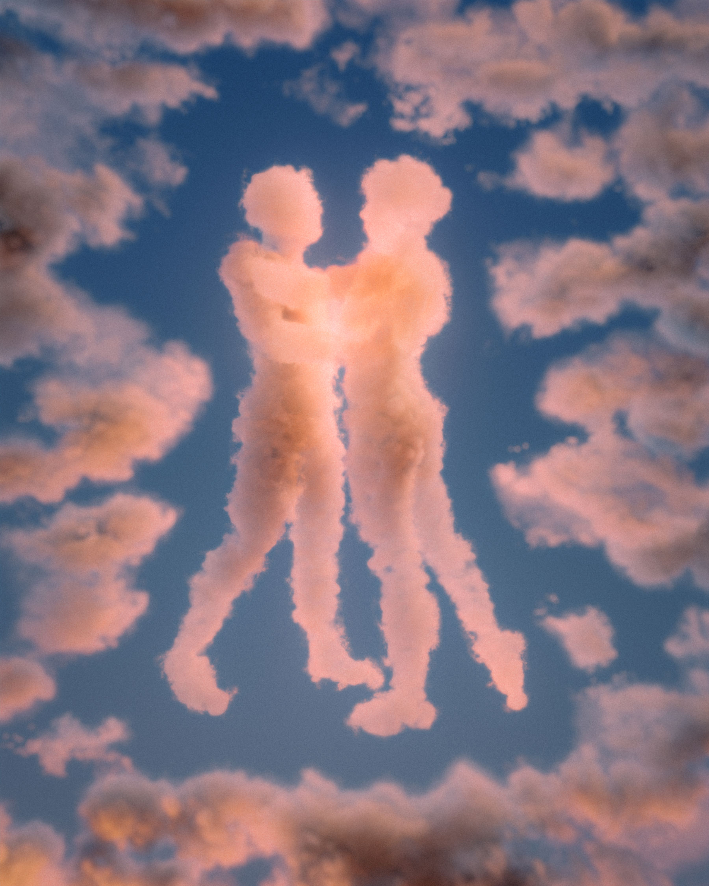

Hayden Clay
Human Nature


Human Nature is a series of artworks that explores the boundary between humans and their environment.
Each artwork invites the viewer to reconsider this boundary; perhaps it is less defined than we think.
Clouds can take human form, water shows us our reflection, and nature is a common destination to "find oneself."
Through a series of 3D renders, Human Nature embarks on a surreal and beautiful journey to ponder this intricate relationship.
Artist Bio
3D Artist based in Brooklyn NY, I create surreal artworks with a positive and often playful association.